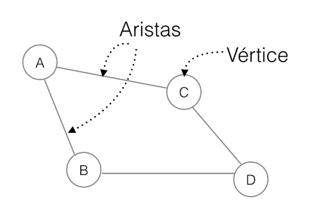
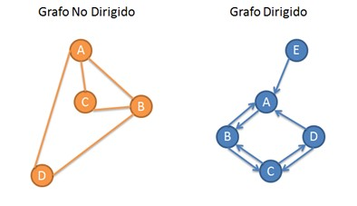

Esta página web se encuentra creada para poder ayudarte con el entendimiento de los distintos algoritmos, dentro de los primeros algoritmos a que verás son los Graphos.
¿Qué son los grafos?
Los grafos son un conjunto de objetos llamados vértices o nodos unidos por enlaces que llamamos aristas o arcos, que permiten representar relaciones binarias entre elementos de un conjunto.

Dentro de los grafos se pueden visualizar:
Los grafos dirigidos: cuentan con los elementos clásicos de un grafo simple, pero con la particularidad de que sus aristas que conectan los nodos tienen una direccionalidad clara.
Los grafos no dirigidos: la única diferencia entre estos grafos y los anteriores es que estos grafos no cuentan con una direccionalidad clara.

Propiedades de los Grafos
Adyacencia: dos aristas son adyacentes si tienen un vértice en común, y dos vértices son adyacentes si una arista los une.
Incidencia: una arista es incidente a un vértice si esta lo une a otro.
Ponderación: corresponde a una función que a cada arista le asocia un valor (costo, peso, longitud, etc.), para aumentar la expresividad del modelo. Esto se usa mucho para problemas de optimización, como el del vendedor viajero o del camino más corto.
Etiquetado: distinción que se hace a los vértices y/o aristas mediante una marca que los hace unívocamente distinguibles del resto.
Representación de los Grafos
Los grafos se pueden representar mediante matrices de adyacencia, que son matrices cuadradas donde las filas y las columnas hacen referencia a los vértices para almacenar en cada casilla la longitud entre cada par de vértices del grafo.
×
Contactos
Nombre: Andrea Fernández Laffertt Correo: andrea.fernandez.l@ucb.edu.bo Nro. celular: 702045492
Nombre: Ayana Siegle Clavijo Correo: ayana.siegle@ucb.edu.bo Nro. celular: 62273515
Nombre: Gabriela Barrios Michel Correo: gabriela.barrios@ucb.edu.bo Nro. celular: 60698796